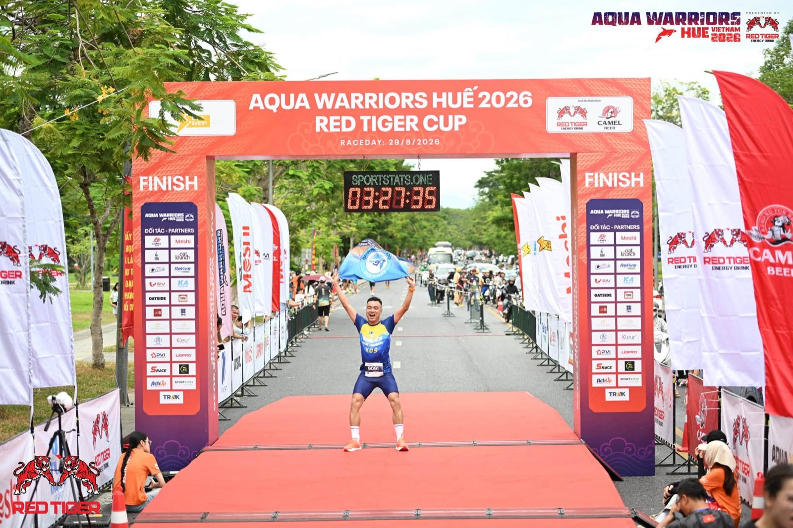
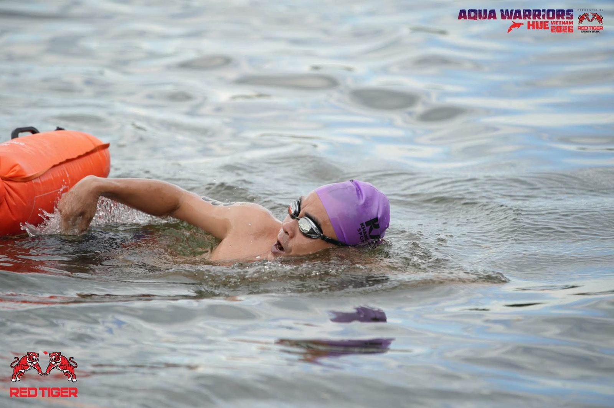
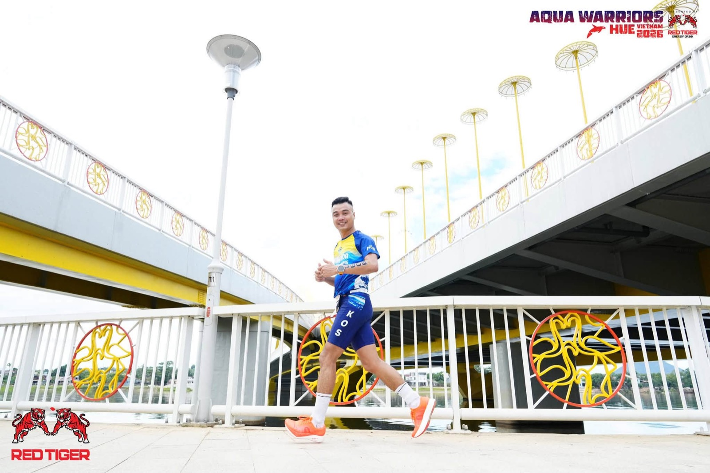
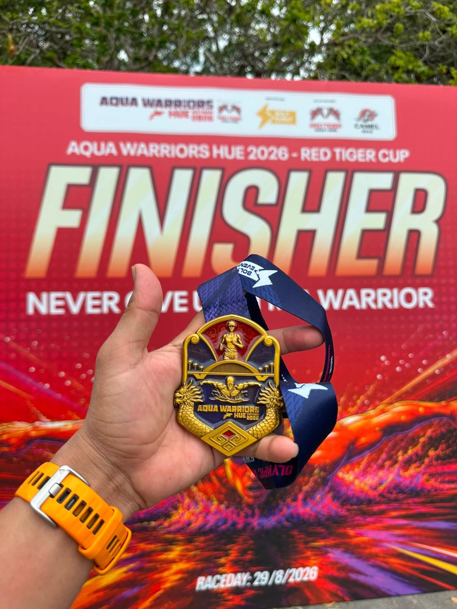

Tôi ra vạch xuất phát mà chưa tập buổi nào
Aqua Warriors Huế 2026 — bơi 1,5km sông Hương, chạy 10km. Cự ly không lớn với tôi. Nhưng ba tuần trước ngày thi, tôi gần như không tập được buổi nào. Đây là chuyện thật, không tô hồng.

Về đích. Nhưng chặng khó nhất không nằm ở đường đua.
Tôi từng hoàn thành Ironman, từng chạy vài giải full marathon. Bơi 1,5km, chạy 10km — với thể lực nền đã có, đây không phải cự ly làm tôi lo. Và chính vì nghĩ vậy, tôi đã chủ quan.
Ba tuần trước giải, cơ thể gửi hoá đơn
Đêm nào tôi cũng thức muộn — không phải vì bận việc, mà vì cuốn vào xem review phim trên điện thoại. Có bữa ngủ được đúng 5 tiếng là dậy, có bữa lại ngủ đến tận trưa mới tỉnh, dậy rồi người vẫn lờ đờ. Không có nhịp nào ổn định cả.
Tôi có ghi lại đúng cảm giác lúc đó, không sửa lại cho đẹp:
Thèm ngủ vô cùng luôn. Không hiểu sao đợt này mình sống nó buông thả.
Kế hoạch là đi bơi thử một, hai buổi trước ngày thi để quen nước sông — nước sông khác nước biển, tôi chưa bơi sông bao giờ. Nhưng sáng nào định dậy đi bơi thì lại mệt không dậy nổi. Đến chiều hôm trước ngày khởi hành đi Huế, tôi mới xếp đồ vào xe: khăn tắm, phao bơi, kính bơi — đủ cả, chỉ thiếu đúng phần tập luyện.

"Mình cũng hơi chủ quan" — câu tôi tự nói với mình
Tôi biết rõ lý do vì sao mình buông. Chính vì nghĩ cự ly này không khó với mình, nên không có gì thúc tôi phải ép lịch tập. Cái bẫy nằm ở đó: không phải việc khó làm mình bỏ tập, mà việc mình nghĩ là dễ mới làm mình bỏ tập.
Việc khó, tôi luôn tìm cách chuẩn bị kỹ vì tôi sợ nó. Việc dễ thì tôi tin bằng thể lực nền là đủ — cho đến khi ra vạch xuất phát với hai chân chưa hề được nhắc.
Vạch xuất phát, với một mục tiêu duy nhất: hoàn thành
Sáng 29/8, tôi ra vạch xuất phát ở Huế cùng vài anh chị em trong nhóm bơi biển Khánh Hòa. Không có mục tiêu thành tích nào cả — mục tiêu duy nhất là hoàn thành trọn vẹn cả hai chặng, cho nó vui vẻ.

Và tôi về đích. 1 giờ 58 phút 54 giây cho cả hai chặng — không phải thành tích nhanh, nhưng là con số thật, tôi không giấu. Với ba tuần chuẩn bị như vậy, tôi coi đây là một lần về đích bằng vốn cũ, không phải bằng phong độ mới.

Sáng hôm sau, trước khi bay về, tôi vẫn dậy sớm chạy dọc bờ thành Kinh thành Huế — thói quen cũ mỗi lần đến một vùng đất mới. Chạy được hơn 4km thì vướng lối đi chưa hoàn thiện, phải dừng lại giữa chừng. Có gì đó dở dang, để dành cho lần sau quay lại.
Điều tôi mang về, không phải huy chương
Bài học lớn nhất của tôi lần này không nằm ở đường đua. Nó nằm ở việc nhận ra: tôi vẫn có thể để mình buông lỏng nếu không có gì buộc mình phải nghiêm túc — kể cả khi thứ đang chờ ở phía trước là một giải đấu đã lên lịch từ lâu.
Trong nghề tư vấn cũng vậy. Có những việc tôi tự tin là "chuyện nhỏ" — một buổi hẹn khách quen, một hồ sơ tưởng đơn giản — và chính những việc đó dễ bị làm qua loa nhất, vì không có cảm giác nguy hiểm để mình cảnh giác.
Việc mình sợ thì mình chuẩn bị kỹ. Việc mình coi thường thì mình mới hay trả giá.
Tôi không viết bài này để kể một câu chuyện đẹp về nghị lực. Tôi viết vì muốn giữ lại đúng phiên bản thật: có tuần chuẩn bị dở, có buông lỏng, có chủ quan — và vẫn ra vạch xuất phát, vẫn về đích. Với tôi, đó mới là phần đáng nhớ hơn tấm huy chương.
"Rồi, ngày mới tốt lành nhé."
Sống tử tế · Kiếm tiền hạnh phúc · Cho đi giá trị
Anh/chị cũng từng buông lỏng trước một mục tiêu đã lên lịch?
Tôi không nghĩ mình là người duy nhất. Nhắn tôi kể chuyện của anh/chị — biết đâu lại thấy mình trong đó.
Theo dõi trên Facebook